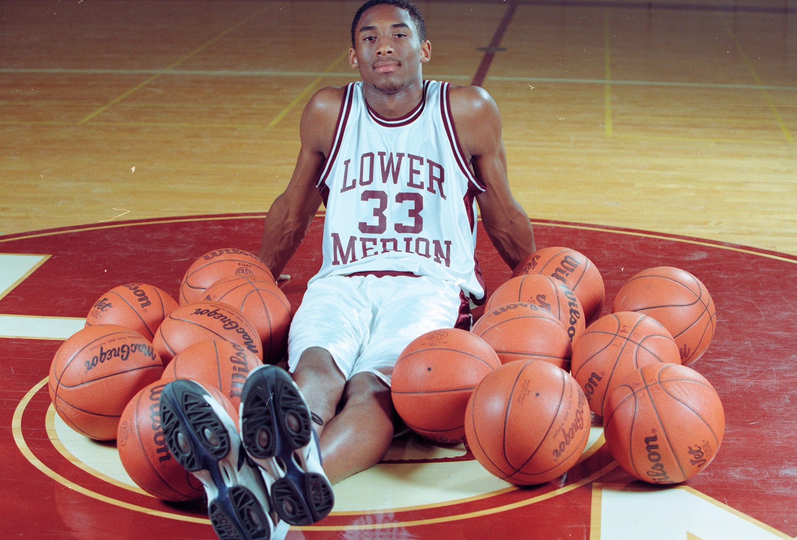

Kobe Bryant went to Lower Marion High School in Philadelphia,
Pennsylvania. He played for his Varsity High School team, The Aces
and led them to their first state championship in 53 years.
After High School, Bryant received a lot of praise from many
recruiters and decided to declare for the NBA Draft instead of
going to College.

NBA Draft
Kobe Bean Bryant was drafted with the 13th overall selection in
1996 by the Charlotte Hornets. However, Kobe had been traded to
the Los Angeles Lakers before even playing a game for the Hornets.
Kobe and Shaq
Beginnings
Kobe and Shaq were one of the most dominant duos in NBA
History.The same summer that the Lakers had drafted Kobe, they
signed Shaquille O'neal, a hall of fame center from the Orlando
Magic.
It took the duo a few years to work together, despite their alpha
mentalities.
Threepeat
After finally figuring out how to play with each other, Kobe and
Shaq went on to win 3 straight championships from 2000-2002.
Downfall
Due to an injury filled season in 2002-2003, the Lakers did not
make it back to the NBA Finals. However, they did make it back in
2004 after acquiring two Hall of Famers, Karl Malone and Gary
Payton.
Kobe had his worst Finals performance in NBA history, and the
Lakers lost to the Detroit Pistons. This eventually led to the
seperation of Kobe and Shaq the following season, and for the rest
of their careers.
Post Shaq
The season after Shaq had left presented a big hole in the Lakers
roster. The Lakers missed the playoffs for the first time since
1994 as a result in 2005.
81 Point Game
One of Kobes biggest achievements in his career was his 81 point
game which was the most points scored in a game in the modern NBA
era and second most points scored all time. Kobe went on to
average 35ppg for the season.
Back On Top
After missing the playoffs in 2005 and losing in the first round
in 2006 and 2007, Kobe grew frustrated with the franchise. Shaq
had won another championship in 2006 as well and this mad Kobe
more angry. He demanded a trade because he was not getting the
support he needed and it was wasting his prime years.
However, instead of trading Kobe, on Feb. 1, 2008, the Lakers
acquired center Paul Gasol from the Memphis Grizzlies in a trade.
This miraculously changed the direction of the Lakers franchise as
they went on to make the next 3 NBA Finals.
The Lakers lost in 2008 to the Boston Celtics in 6 games and many
had questioned the legacy of Kobe's career after Shaq. Could he
still win?
The Lakers then went on to win the next 2 championships with Kobe
winning Finals MVP in both!
Downfall
Quest For Number 6
Kobe was looking to tie Michael Jordan in championship rings. He
had 5 already and was coming off of two nba championships and 3
straight nba finals appearances. Odds looked good for Kobe, but
his team fell short in the second round to the Dallas Mavericks in
4 games.
The next season, Kobe's long time coach, Phil Jackson, had
announced his retirement from the team. Kobe's odds of winning
again didn't look too good, so the Lakers went ahead and traded
for Supserstar point guard Chris Paul from the New Orleans
Hornets. However, this became the most controversial trade in NBA
history as the league vetoed the trade. As a result, the Lakers
would lose to the Oklahoma City Thunder in the second round of the
2012 playoffs.
Injuries
The 2012-13 season was going really well for Kobe, as he averaged
27ppg and led the Lakers to the best record after the all star
break. However, Kobe tore his achilles in the 80th game of the
season, 2 games before the playoffs which ended his season.
Kobe returned back to the court on December 8, 2013 against the
Toronto Raptors. However, his return was cut short to only 6 games
when he fractured his knee.
Kobe returned at the start of the 2014-15 season. He played 35,
and also passed Michael Jordan on the NBA's all time scoring list.
His season was again cut short after he tore his rotator cuff in
his right shoulder.
Kobe would return at the start of the 2015-16 which later on he
announced would be his last season.
Final Game
In his final game, Kobe dropped 60 points! The most points scored
by a player in his final game.
After Basketball and Death
Dear Basketball
One year after Kobe had retired from the NBA, he helped create an
animated short film, "Dear Basketball", narrating his career.
This was a huge accomplishment of Kobe's because a few months
after he won an Oscar for the short film.
Jersey Retirement
On December 18, 2017, the Los Angeles Lakers retired Kobe Bryant's
two jersey numbers. He is the first player in history to have two
numbers retired.
Death
Unfortunately on January 26, 2020, Kobe Bryant died in Helicopter
Crash in Calibasses, California at age 41.